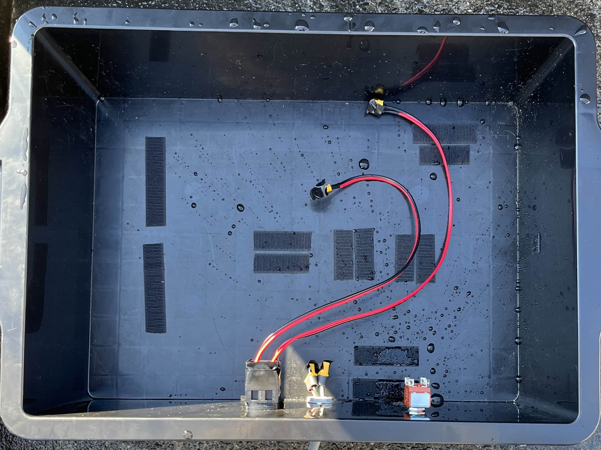
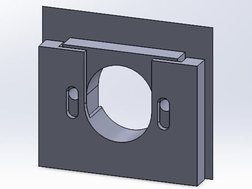
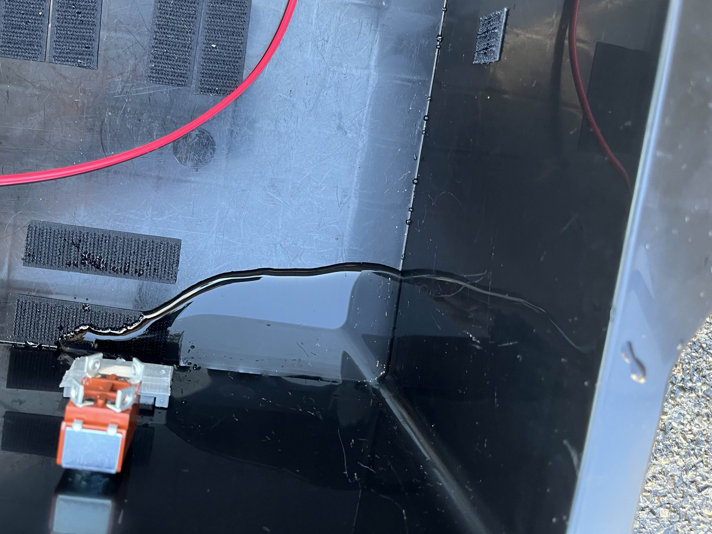
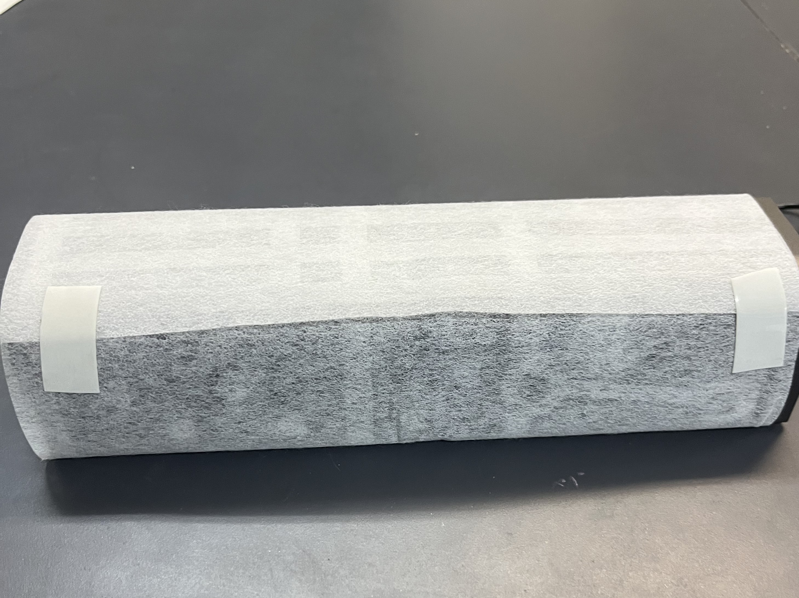
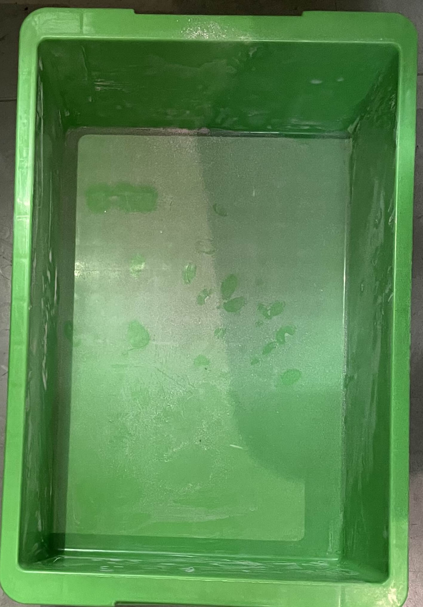
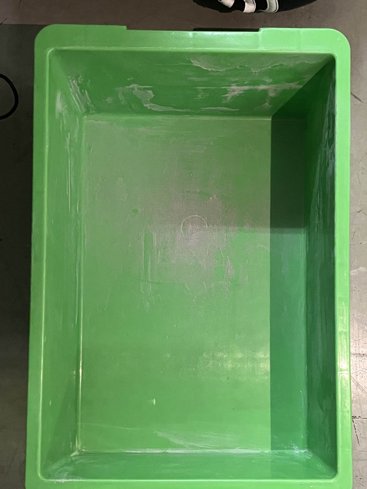
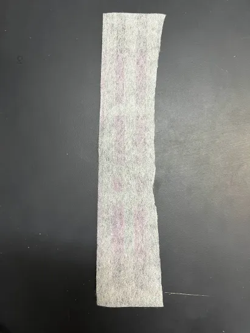
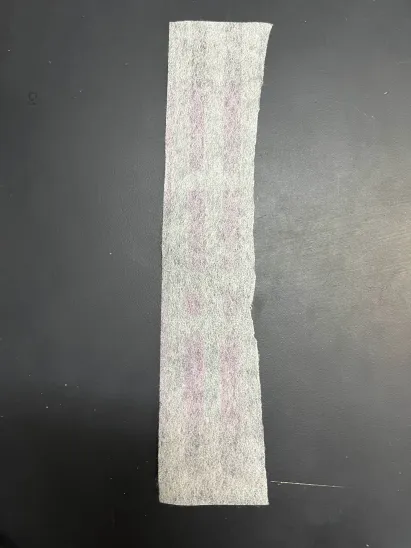

4. 実験・検証
以下の実験を行った
- 標準機のボックスの防水性能の調査および防水対策
- 空気清浄機の性能試験
- パッキンと作成したパーツによる防塵対策
実験のために用意したものを以下に示す
4.1 防水性能の調査および防水対策
標準機のボックスの防水性能を調査した。図1のようにボックス内部の基盤等を外し、ボックスのみの状態にした。ふたを閉めたボックス全体に水をかけ、水がどこから侵入してくるか確認した。その結果を図2に示す。
図1 ボックス内部
図2 全体に水をかけた後のボックス内部
この結果からボックス側面に開けた穴から水が浸入しており、ふたとボックスの間から水が侵入することはないということが分かった。ボックス側面の穴に水を流した様子を動画１に示す。
動画1 対策なしで水を流す様子
3Dプリンタで穴をふさぐ為の防塵防水用パーツを作成した。図3にその形状を示す。2つのパーツを側面の穴に挟みこみ、ねじ止めをして固定する作りになっている。パーツを合わせた様子を図4に示す。
図3 作成したパーツ
図4 作成したパーツを合わせた様子
防水防塵用パーツを装着して水をかけた。パーツを付けたボックスを図5に示す。今回は実験のため、テープで配線が通る穴は塞いだ。水を流した様子を図6に示す。これを確認すると、下から水が漏れていることが分かる。
図5 パーツを付けたボックス
図6 パーツ装着のみ 実験結果
スポンジパッキンを用いて隙間を埋めパーツを付けなおし、再度水をかけた。スポンジパッキンを貼った様子を図7に示す。また、その結果を動画2に示す。スポンジパッキンを貼ったことにより、水の浸入を防ぐことができた。
図7 パッキン装着
動画2 パッキン有り 実験結果
次に配線の保護について。ボックス内部の配線を戻し、ボックスから出た配線をコルゲートチューブで保護した。その様子を図8に示す。配線は2つに分かれているため、分かれ目はスポンジパッキンで塞いだ。切り口についてもスポンジパッキンを巻きつけることで水の侵入を防げるようにした。
図8 配線保護
4.2 空気清浄機の性能試験
USB扇風機の送風部分にフィルタを取り付けることで簡易的な空気清浄機を作成した。図9が扇風機本体で、図10が作成した空気清浄機である。
この空気清浄機の性能を確かめるために実験を行った。この実験では、内部に侵入した塵や埃としてチョークの粉を用い、標準機のボックスの代用として緑色のボックスを使用した。ボックスの上でチョークの粉が付着した黒板けしをはたき粉を舞わせ、ふたを閉め10分ほど放置した。ボックス内部に空気清浄機を入れた状態と入れていない状態、そして空気清浄機の吸気側のみにフィルタを付けた場合で行い、結果を比べた。空気清浄機は標準機で用いているモバイルバッテリで動作させた。
図9 USB扇風機
図10 空気清浄機
実験の様子を動画3、動画4に示す。
動画3 実験の様子(空気清浄機無し)
動画4 実験の様子(空気清浄機有り)
実験の結果を図11に示す。空気清浄機を使った方がそうでない方よりも粉塵が少なくなっていることが分かる。また、吸気側のみフィルタを付けた方が吸塵効果が高いことが分かる。図12に実験後のフィルタの様子を示す。赤みがかっていて、空気清浄機に吸塵効果があることが分かる。 ここで、空気清浄機を稼働させながら標準機を動かすことができるかという事についても検証した。ラズベリーパイの空いているUSBポートに空気清浄機をつなげることで、空気清浄機を稼働させた。稼働させている間に標準機制作で使用した1m程前進して停止するプログラムを実行したが、問題なく動作したことが確認できた。

図11 実験後の箱内部の様子（1:空気清浄機無し 2:空気清浄機有り 3:吸気側のみにフィルタを付けた場合）
 

図12 実験後のフィルタ(左:2 右:3)
4.3 パッキンとパーツによる防塵対策
防水対策で取り付けたパッキンと防水防塵用パーツに防塵効果があることを確かめる。4.1の実験と同様にチョークの粉を粉塵のかわりとし、蓋を閉めた標準機のボックスの前で黒板けしをはたく。舞ったチョークの粉を標準機に向けて送った。これをパーツを付けた状態とそうでない状態で行い、結果を比べた。
結果を以下図13に示す。
図13 左：パーツ無し 右：パーツあり
図を見比べると、パーツを付けていない対策前のボックスにはチョークの粉が侵入しているが、対策後のボックスにはチョークの粉は侵入しておらず防塵効果があることが分かる。